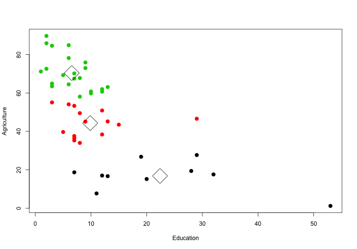

- Make it easy to observe clusters in a dataset
- Help students understand the basics of clustering
- Find important patterns in the data that could SAVE LIVES
For example, the user selects:
The server then runs the code:
selectedData <- swiss[, c("Education", "Agriculture")]
kclust <- kmeans(selectedData, 3)
plot(selectedData, col=kclust$cluster, pch=20, cex=2)
points(kclust$centers, pch=5, cex=4, lwd=1)
The client displays the graph:

We are bringing the power of k-means clustering to the masses. It's obvious how this could change the world and save lives.
This helps ordinary people with the sorts of data questions they face every day.
Invest $10 million in this product.
Not for me. For them.
Thank you.